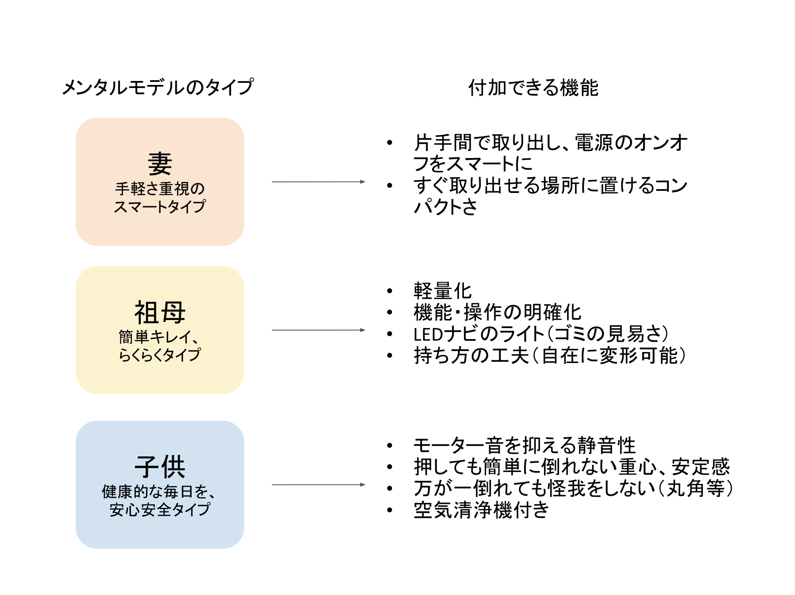
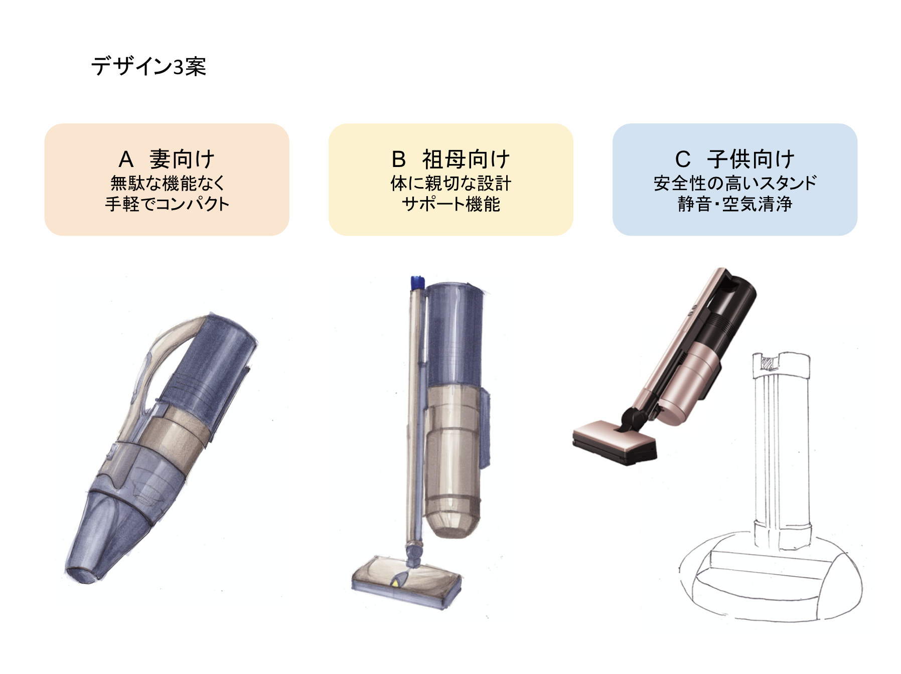
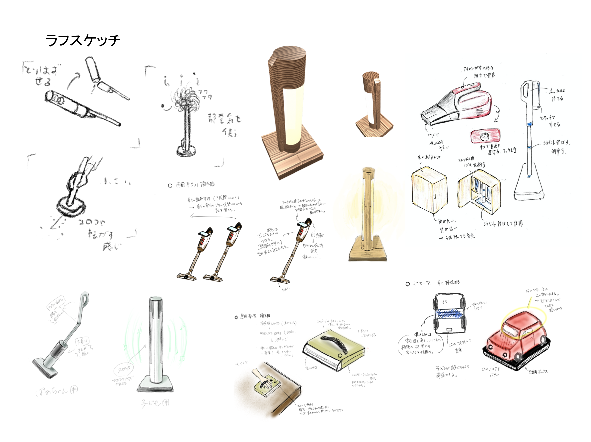
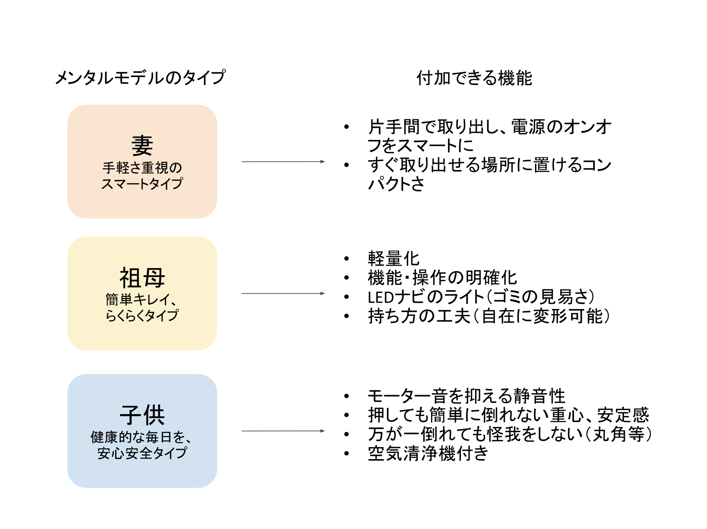
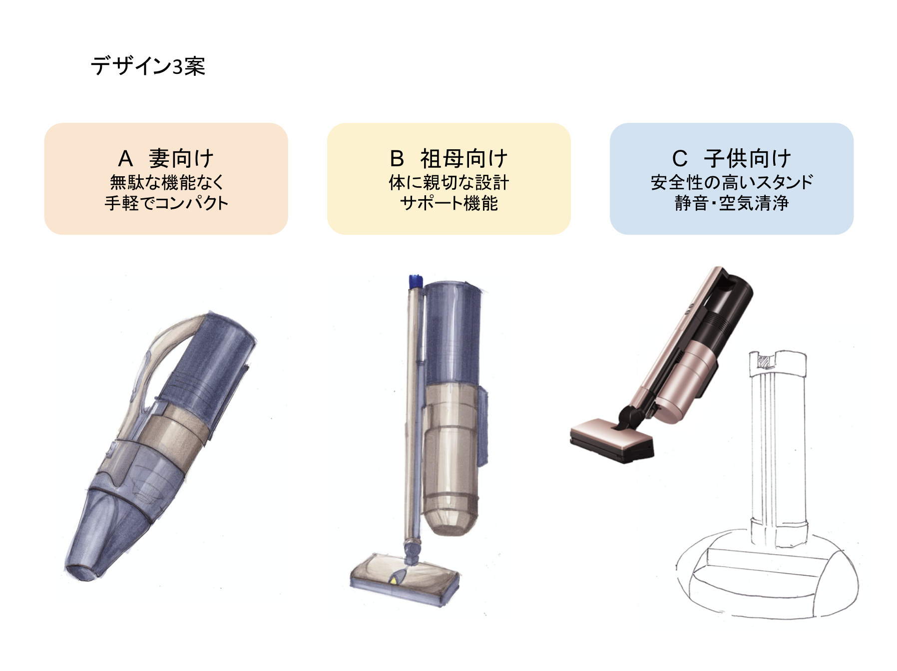
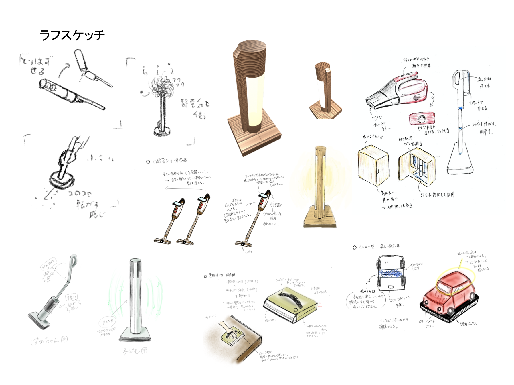
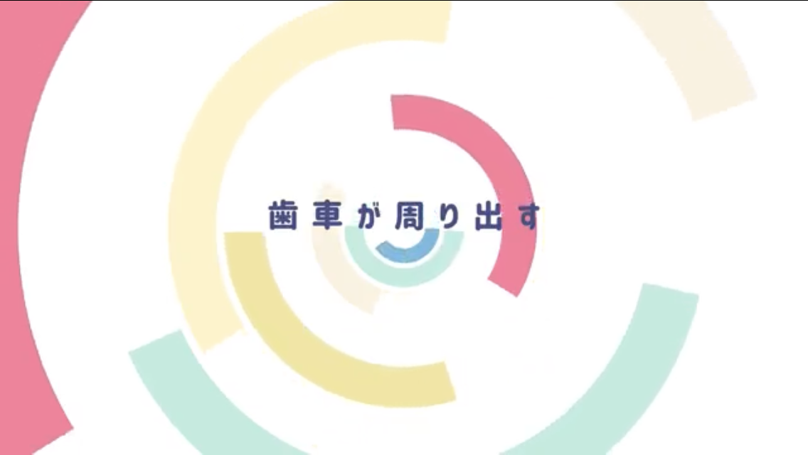
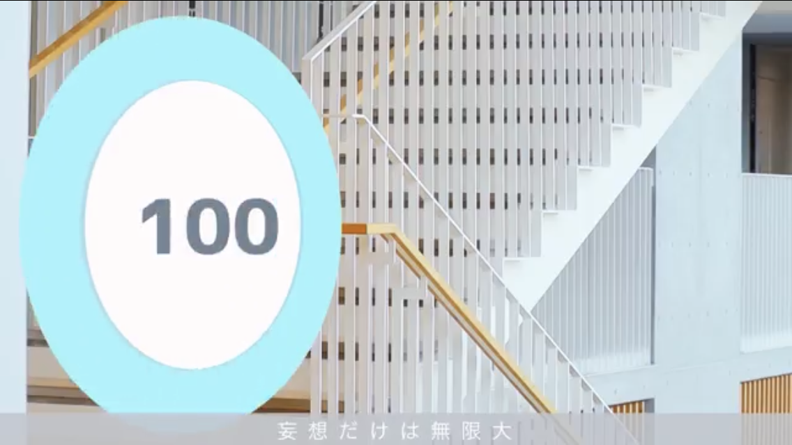
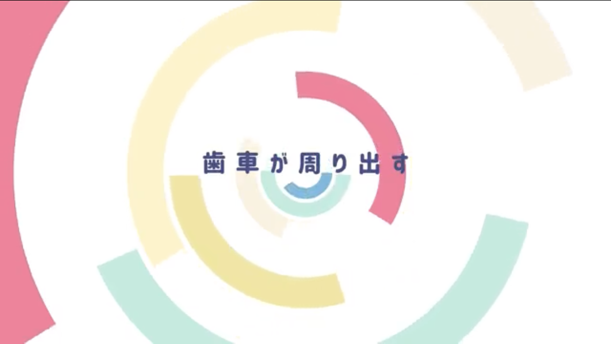
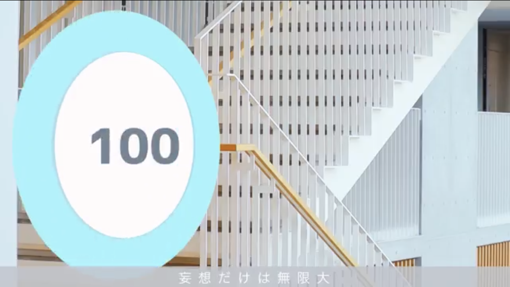

学生作品
Student's Works
学生
の
作品
インダストリアルアート学科の授業で作成した作品です。 本学科は、理工系学部·研究科の中にあるデザインコースとして、 またプロダクト系とメディア系の幅広いデザイン分野が共存する学科として世界的にも非常にユニークな存在といえます。 この特色を最大限活かし、美術系大学など他大学のデザイン系学科とは一線を画した独自の人材を育成します。 デザインとはただ形を作るにとどまらず、コンセプト提案、しくみ構築機能の調整統合など、 新しいモノやコトを生み出す作業における上流段階での重要な役割を担うものであるとの位置づけから、 デザイナーには専門職的なアプローチのみならず、ものづくりの指揮官の役割が社会から期待されるようになっています。 このような社会の要請に応えられる新しいタイプのデザイナーおよびそれに関わる研究者の育成を目指します。 そのために、学生には専門分野だけにとどまらず、学科の特色を活かし、理工系から人文·社会系まで、プロダクト系からメディア系まで、 幅広い領域に対する興味と知見を有し、それらを総動員して新しいタイプのデザインを創生することを期待します。
学部1年
First year of university
1年生

基礎造形A 「線による造形表現」
担当教員：西崎美穂 准教授


基礎造形A 「鉛筆デッサン」
担当教員：西崎美穂 准教授


2次元コンピューターグラフィックス (旧課程)
担当教員：日高良祐 助教、西崎美穂 准教授
使用ソフト：Illustrator、Photoshop


基礎造形B 「筆記用具のデザイン」
担当教員：茂木龍太 助教


基礎造形B 「タンブラーのデザイン」
担当教員：茂木龍太 助教

基礎造形C 「ギャラリーデザイン」
担当教員：土屋真 助教


ドローイングA 「デザイン製図法」
担当教員：茂木龍太 助教

ドローイングB 「イームズハウス図面」
担当教員：茂木龍太 助教


ドローイングC 「南大沢キャンパス内の空間デザイン」
担当教員：土屋真 助教


ドローイングC 「テレワーク」
担当教員：土屋真 助教

アニメーション基礎「セルアニメーション」
担当教員：今間俊博 教授
使用ソフト：Premiere、AfterEffects


デザインプログラミング「最終課題」
担当教員：安藤大地 助教
使用ソフト：Processing
学部2年
Second year of university
2年生


Basics of Spatial Design「Urban Garden Project」
担当教員：ヴァールアダムス 准教授


Basics of Spatial Design「Urban Garden Project」
担当教員：ヴァールアダムス 准教授
使用ソフト：SketchUp

リビングデザイン基礎 「紙の造作」
担当教員：藤原敬介 教授

トランスポーテーションデザイン基礎「パーソナルモビリティ」
担当教員：難波治 教授
 




人間工学基礎 「ユーザビリティ評価と製品開発プロセス」
担当教員：笠松慶子 教授

イクイップメントデザイン基礎 「製品デザイン」
担当教員：金石振 准教授


プロトタイピング基礎 「時計デザイン」
担当教員：馬場哲晃 准教授
使用ソフト：Processing


グラフィックデザイン基礎「文庫本カバーデザイン / ステーショナリーデザイン」
担当教員：菊竹雪 教授
使用ソフト：Illustrator

映像基礎 「照明効果」
担当教員：今間俊博 教授
使用ソフト：Premiere、AfterEffects


メディア表現概論 「役に立たない機械」
担当教員：串山久美子 教授

プログラミング基礎「オリジナルゲーム制作」
担当教員：向井智彦 准教授
使用ソフト：Unity (C#)、Visual Studio

Web基礎 「コンテンツ制作」
担当教員：安藤大地 助教
使用ソフト等：atom(HTML、CSS、JavaScript)、Illustrator
学部3年
Third year of university
3年生
＊学部3年次以降の授業は日野キャンパスでの開講となります。

リビングデザイン演習・実習「インテリアエレメントデザイン」
担当教員：藤原敬介 教授


スペースデザイン演習・実習
担当教員：ヴァールアダムス 准教授

ストラテジック・デザイン特別演習
担当教員：山下敏男 先生


イクイップメントデザイン演習・実習
担当教員：金石振 准教授

トランスポーテーションデザイン演習・実習
担当教員：難波治 教授


インタラクションデザイン演習・実習
担当教員：馬場哲晃 准教授
使用ソフト等：OpenFrameworks(C++)


インタラクティブアート演習・実習
担当教員：串山久美子 教授
使用ソフト等：OpenFrameworks(C++)、Kinect、AfterEffects、Xcode


グラフィックデザイン演習・実習「お香のパッケージデザイン」
担当教員：菊竹雪 教授
使用ソフト：Illustrator


ネットワーク演習・実習
担当教員：杉本達應 准教授、安藤大地 助教
使用ソフト：Visual Studio Code(HTML、CSS、JavaScript)

 



映像演習・実習「モデリング、カメラワーク / PV」
担当教員：今間俊博 教授
使用ソフト：Maya、Premiere、AfterEffects